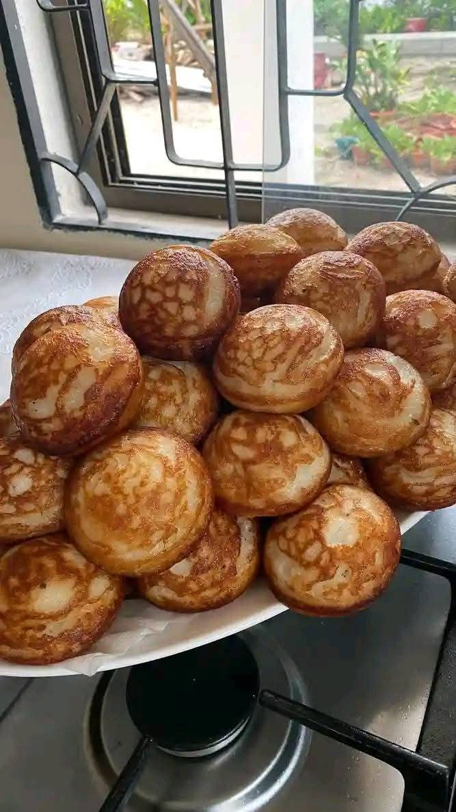
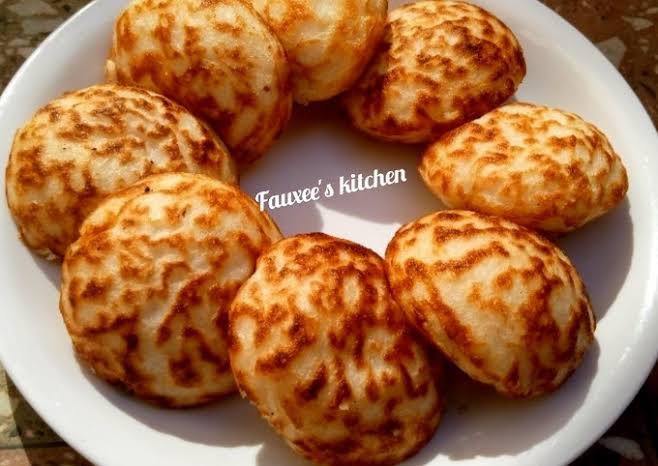

1
2
3
4
5 Wainar-shinkafa
7
8
9
🍚 Wainar Shinkafa (Rice Pancake)

Home
Wainar Shinkafa
, also called masa or sinasir, is a fluffy Hausa rice pancake beloved across Northern Nigeria .
Ingredients
- 3 cups rice (tuwo rice or short-grain/jasmine)
- 1 cup cooked rice (for softness)
- 2 tsp active dry yeast (or 2–3 tbsp yogurt as alternative leavener)
- 2–4 tbsp sugar (adjust for sweetness)
- Pinch of salt
- ½ onion, finely chopped (optional, savory versions
- ½ tsp baking powder (optional, for fluffiness)
- Vegetable oil for frying
Preparation Steps
- Soak rice
Soak the raw rice for at least 6–10 hours or overnight until it’s soft .
- Blend mixture
Rinse the soaked rice, then blend it with cooked rice and enough water to create a smooth, pancake-batter texture .
- Mix in leavening ingredients
Stir in yeast (or yogurt), sugar, salt, baking powder, and chopped onions (if using). Let the batter rest in a warm place for 3–4 hours until it bubbles and rises .
- Fry pancakes
Heat a little oil in a masa pan or skillet. Pour small scoops of batter and fry until each side is golden brown (approx. 2–3 minutes per side) .
- Serve warm
Serve with honey, suya sauce, stew, or eat it plain — it’s delicious any way!
Quick Tips
- Let the batter ferment fully for fluffy texture.
- Pan size affects shape—smaller scoops make snack-sized pancakes.

Ways Wainar Shinkafa (Masa) Is Served:
- With Yajin Kuli (Suya Pepper Sauce)
- With Honey or Sugar
- With Miyan Taushe (Pumpkin Soup)
- With Miyan Kuka or Tomato Stew
- With Suya (Spicy Grilled Meat
- With Tea (Shayi), especially for breakfast or evening snack
 Home
10
11
Home
10
11